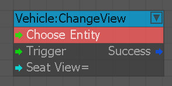
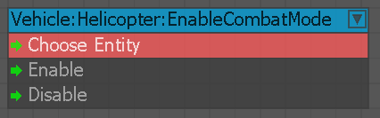
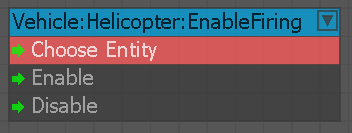
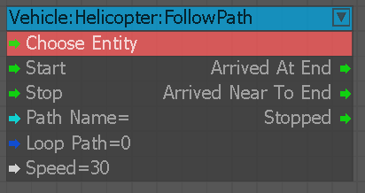
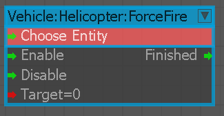
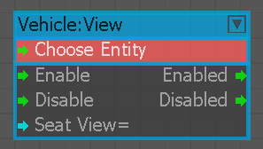

Приложение
Обработка вложений объектов транспортного средства.
ChangeSeat
Перемещает актера с места на другое. Работает только в том случае, если актер уже находится внутри транспортного средства.
ChangeView
Используется для установки обзора автомобиля для каждого места.

ChaseTarget
Следует/перемещается по указанному пути, пытаясь установить линию видимости/огня по указанной цели.
Урон
Устранить повреждения автомобиля.
Уничтожить
Узел для уничтожения машины.
Войти
Заставляет AI занять указанное место указанного транспортного средства.
FollowPath
Следуйте действию позиции скорости пути.
GetSeatHelper
Получает вспомогательную позицию сиденья (например, для входа).
Ручной тормоз
Переключить ручной тормоз автомобиля. В настоящее время поддерживается только для типа движения ArcadeWheeled.
сигналить
Используйте звуковой сигнал автомобиля.
Вертолет
EnableCombatMode
Используется для изменения траектории полета AI, чтобы найти наилучшую позицию для поражения цели.

Входы
| Порт | Тип | Описание |
|---|---|---|
| Включить | Любой | Включает боевой режим |
| Отключить | Любой | Отключает боевой режим |
EnableFiring
Используется, чтобы позволить полету AI стрелять по цели при использовании в сочетании сEnableCombatMode узел. Если отключено, он просто тактически позиционируется в местах, откуда он может видеть/поражать цель. Состояние по умолчанию включено.

Входы
| Порт | Тип | Описание |
|---|---|---|
| Включить | Любой | Включает режим стрельбы |
| Отключить | Любой | Отключает режим стрельбы |
FollowPath
Используется для установки пути, по которому должен следовать рейс AI. Когда вы не в боевом режиме, он будет следовать максимально точно от начала до конца. В боевом режиме он представляет собой путь, по которому AI может располагаться/патрулировать.

Входы
| Порт | Тип | Описание |
|---|---|---|
| Старт | Любой | Начните следовать по пути |
| Стоп | Любой | Перестаньте следовать по пути |
| PathName | Строка | Название пути, по которому следует следовать |
| LoopPath | логическое значение | Сколько раз обходить путь |
| Скорость | Плавать | Скорость полета AI |
Выходы
| Порт | Тип | Описание |
|---|---|---|
| ArrivedAtEnd | Любой | Срабатывает, когда рейс AI находится в конце пути. |
| ArrivedNearToEnd | Любой | Срабатывает, когда рейс AI приближается к концу пути. |
| Остановлено | Любой | Срабатывает, когда рейс AI остановлен. |
ForceFire
Используется для принудительного направления внимания полета AI на конкретный объект.

Входы
| Порт | Тип | Описание |
|---|---|---|
| Включить | Любой | Включает принудительную стрельбу |
| Отключить | Любой | Отключает принудительную стрельбу |
| Цель | Любой | Цель внимания |
Выходы
| Порт | Тип | Описание |
|---|---|---|
| Закончено | Любой | Запускается по завершении |
Свет
Переключить освещение автомобиля.
Блокировка
Блокирует/разблокирует все сиденья автомобиля.
MoveActionMult
Добавляйте множители к действиям по движению транспорта.
Движение
Контролировать движение автомобиля.
MovementParams
Изменяет параметры движения транспорта.
Пассажир
Обращение с пассажирами транспортного средства.
Сиденье
Обработка сидений автомобиля.
StickPath
Следует по указанному пути до конца, придерживаясь необязательной цели, либо постоянно, либо как разовое событие. Используйте транспортное средство со входом Entity узла.
Турель
Управлять башней автомобиля.
Разгрузить
Разгружает транспортное средство, выбрасывая указанных пассажиров.
Посмотреть
Используется для включения/отключения количества просмотров на место.
